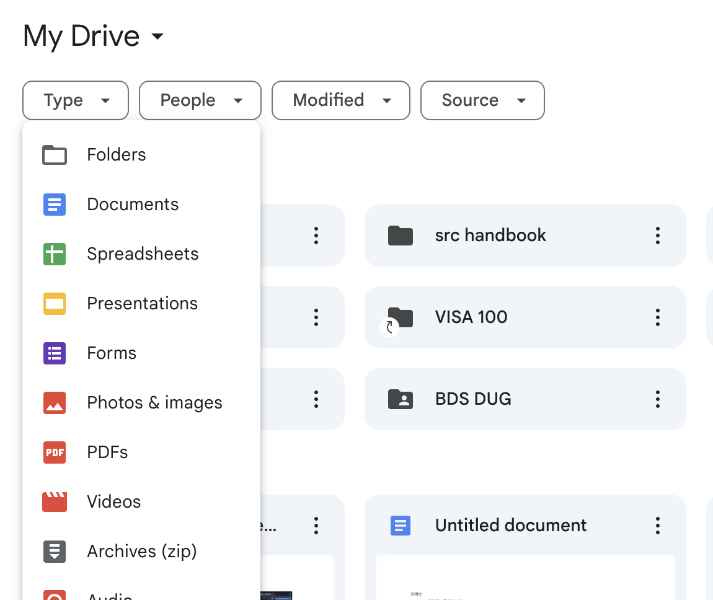

Home
About Me
Projects
Hey there, I'm
Tiffany Tran
a design engineer striving to make digital experiences and interactions more intuitive and accessible
About Me
a design engineer striving to make digital experiences and interactions more intuitive and accessible



Projects
Designers are encouraged to consider mismatches, which Kat Holmes defines as
instances where poor design hinders human interactions.
Notice how keyboard interactions cannot access the People, Modified, and Source dropdown menus.